236 — Viêm tai xương chũm & biến chứng nội sọ: huyết khối xoang, áp-xe não / Acute mastoiditis & otogenic intracranial complications
Tags: pattern:viem-xuong-chum pattern:bien-chung-noi-so pattern:huyet-khoi-xoang-tinh-mach pattern:apxe-nao vung:xuong-thai-duong score:CAM protocol:CT-xuong-thai-duong protocol:MRI-MRV
Mức chắc chắn (certainty): tổng hợp y văn (literature synthesis) — gom ca nguyên văn CC BY + số liệu cohort (Reale Ital J Pediatr 2025; Sabitova Children 2026; Sofer Eur Arch Otorhinolaryngol 2026; tổng quan Bizdu-Branovici Medicina 2026).
1. Tổng quan — mòn xương chũm dẫn đường cho 3 đường lan nội sọ
- Viêm tai xương chũm cấp (acute mastoiditis — AM) là biến chứng hay gặp nhất của viêm tai giữa cấp (acute otitis media — AOM): 1,2–6,1/100.000 trẻ 0–14 tuổi/năm (Reale 2025), tổng hợp khác 1,2–1,6/100.000 người/năm (Sabitova 2026); Israel theo registry 7,78/100.000 trẻ-năm. Chẩn đoán AM là lâm sàng (sưng–đỏ–đau vùng sau tai hoặc vành tai nhô ra ở trẻ đang/có AOM trong 4 tuần), không dựa đơn thuần vào hình ảnh.
- Viêm xương chũm thể kết dính (coalescent mastoiditis): viêm mủ phá các vách xương mảnh giữa các tế bào chũm → CT cửa sổ xương mất vách xương, có thể mòn vách xoang sigma, mảnh tegmen (trần sào bào), vách xoang bên. TẠI SAO mòn xương lại quyết định: chỉ cần một điểm mòn mỏng là đủ mở đường cho mủ/vi khuẩn lan trực tiếp ra màng não và xoang tĩnh mạch lân cận — đây là cơ chế của toàn bộ biến chứng nội sọ.
- Biến chứng được gọi là CAM (complicated acute mastoiditis) khi có bằng chứng viêm màng não, viêm xương, áp-xe (chũm/nội sọ), huyết khối xoang tĩnh mạch (CVST) và/hoặc liệt dây VI–VII. Cohort Florence 2016–2023 (n = 85, 60% nam, tuổi trung vị 4 tuổi): 20% (17/85) là CAM. Tỷ lệ biến chứng trong y văn rất dao động 1,9–35% (Sabitova), do khác tiêu chuẩn chọn và mức chậm chuyển tuyến.
- CRP là chỉ báo hữu ích: điểm cắt 12 mg/dL, trên ngưỡng này nguy cơ CAM tăng (OR 1,082; 95%CI 1,008–1,162; p = 0,029) — cao hơn hẳn ở nhóm CAM (p = 0,043), trong khi WBC/neutrophil không khác biệt.
- Cơ chế hình ảnh từng chuỗi (vật lý):
- CT không cản quang cửa sổ xương: mờ các tế bào chũm do dịch/mủ (đậm độ mô mềm ~10–40 HU) + mất vách xương mảnh = coalescent. Đây là chuỗi nhạy nhất để lập bản đồ xương.
- Mủ (pus) hạn chế khuếch tán: dịch đặc, đầy tế bào viêm + protein + mảnh hoại tử làm giảm chuyển động Brown của nước → DWI sáng, ADC tối — đây là dấu hiệu chốt áp-xe não (khác phù vasogenic: DWI tối/ADC sáng).
- Huyết khối xoang tĩnh mạch (thrombus): tín hiệu T1/T2 tiến triển theo tuổi cục máu (oxy- → deoxy- → methemoglobin nội bào T1 sáng → methemoglobin ngoại bào T1&T2 sáng → hemosiderin T1/T2 tối). MRV (time-of-flight hoặc sau gadolinium) là chuỗi xác nhận: khuyết thuốc (filling defect) trong lòng xoang; CE-MRI thấy ngấm màng não/huyết khối quanh xoang.
- Viêm màng não – tụ mủ: ngấm màng não (leptomeningeal), tụ dịch ngoài trục hình liềm/vành khăn — MRI sau gadolinium nhạy hơn CT rõ rệt.
2. Mẫu hình + chẩn đoán phân biệt theo vị trí (Gamut)
- Tại chỗ (intratemporal): viêm mê nhĩ (labyrinthitis — chóng mặt + nghe kém), liệt dây VII, viêm đỉnh xương đá (petrous apicitis / Gradenigo: viêm xương chũm + liệt dây VI + đau sau ổ mắt).
- Ngoài sọ–cạnh xương chũm: áp-xe dưới màng xương (subperiosteal abscess) — hay gặp nhất; áp-xe Bezold (lan xuống cơ ức-đòn-chũm), áp-xe Citelli (vùng chẩm–hành tá tràng), viêm xương chũm (osteomyelitis).
- Nội sọ (đích của bài này): viêm màng não (meningitis), tụ mủ ngoài màng cứng/dưới màng cứng (epidural/subdural empyema), áp-xe não (thùy thái dương / tiểu não — theo đường lan mòn tegmen hoặc xoang sigma), huyết khối xoang sigma–ngang và tĩnh mạch cảnh trong (otogenic lateral sinus thrombosis — OLST).
- Gợi nhớ "MADE": Meningitis — Abscess (brain/epidural/subdural) — Dural sinus thrombosis — Extratemporal/mastoid abscess. Mọi CAM phải trả lời 4 câu này.
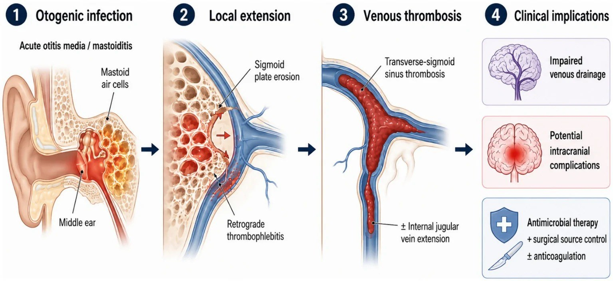
Sơ đồ đề xuất đường lan của huyết khối xoang ngang–sigma do tai (otogenic): từ AOM → viêm xương chũm → mòn vách xoang sigma hoặc huyết khối lan ngược (retrograde thrombophlebitis) → huyết khối xoang ngang–sigma, có thể lan xuống tĩnh mạch cảnh trong → giảm dẫn lưu tĩnh mạch. Nguồn: Arias Rodríguez FD et al., Front Med 2026, PMC13546992 Fig. 5, CC BY 4.0.3. Bảng so sánh phân biệt (ma trận đối chiếu)
| Thực thể (entity) | Hình ảnh điển hình | Chốt vào (rule-in) | Chốt loại (rule-out) | Gợi ý xác nhận |
|---|---|---|---|---|
| Mờ chũm KHÔNG viêm tai chũm (subclinical opacification) | Mờ tế bào chũm không mòn vách, ở trẻ có AOM, không sưng sau tai | Mờ chũm kèm AOM nhưng lâm sàng không có sưng/đỏ/đau sau tai | Có mòn vách + lâm sàng sau tai → là AM thật | Lâm sàng là chốt; không điều trị mờ chũm đơn thuần |
| Viêm tai xương chũm cấp (coalescent AM) | Mờ chũm + mất vách xương mảnh, tai giữa mờ | Sưng–đỏ–đau sau tai (77,6% ca) + mờ chũm | Không mòn xương + không triệu chứng tại chỗ → theo dõi AOM | CT cửa sổ xương |
| Áp-xe dưới màng xương | Khối mô mềm vùng sau tai, có thể đẩy vành tai ra trước | Khối mô mềm sau tai + mòn vỏ xương chũm | Không có khối mô mềm → viêm chũm đơn thuần | CT; dẫn lưu nếu khối lớn |
| Huyết khối xoang sigma–ngang (OLST) | Khuyết thuốc lòng xoang trên CT cản quang/MRV; tín hiệu huyết khối T1/T2 theo tuổi máu | Khuyết thuốc MRV + mòn vách xoang sigma | Dòng chảy đối xứng, không khuyết → loại | MRI + MRV (chuẩn); theo dõi 3–6 tháng |
| Áp-xe não nội sọ | Khối DWI sáng / ADC tối, viền ngấm thì muộn, phù quanh | DWI sáng + ADC tối (mủ) + viền ngấm | DWI tối/ADC sáng = phù/khối u, không phải mủ | MRI + DWI; chọc/cắt lấy mủ |
| Viêm màng não nội sọ | Ngấm màng não, tụ mủ dưới màng cứng hình liềm | Ngấm màng não lan + sốt + cứng gáy | Chỉ mờ chũm, không ngấm màng não | MRI sau gadolinium + DNT |
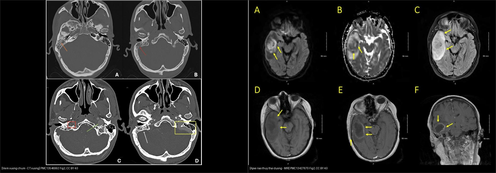
Trái: CT cửa sổ xương — mờ tế bào chũm phải (cam), mòn vách xoang sigma (đỏ), khuyết thuốc tĩnh mạch cảnh trong (ô đỏ). Phải: MRI — DWI/ADC hạn chế khuếch tán thùy thái dương phải (A,B), FLAIR phù (C), T1 sau gadolinium viền ngấm ổ áp-xe (E,F). Nguồn: Arias Rodríguez FD et al., Front Med 2026, PMC13546992 Fig. 2; Yahya T et al., Cureus 2026, PMC13427670 Fig. 2 — CC BY 4.0. Ảnh ghép letterbox, giữ nguyên tỷ lệ.Ba đích nội sọ cần khảo sát riêng (đọc có hệ thống)
- Đường tegmen (trần sào bào/hang chũm) → mòn lên trên → tụ mủ ngoài màng cứng / áp-xe thùy thái dương (như ca Yahya 2026).
- Đường vách xoang sigma → huyết khối xoang bên → lan tĩnh mạch cảnh trong (ca Arias Rodríguez 2026: khuyết thuốc kéo dài xuống tĩnh mạch cảnh trong).
- Đường qua bóng cảnh (jugular bulb) hoặc xương đá → viêm mê nhĩ, liệt dây VII, Gradenigo.
4. Protocol chụp + phân độ & khi nào can thiệp
- Bước 1 — CT xương thái dương lát mỏng 0,5–1 mm (bone window) + CT cản quang: đánh giá mờ chũm, mòn vách xoang sigma/tegmen, khuyết thuốc tĩnh mạch cảnh trong, khối mô mềm sau tai. Là chuỗi đầu tay vì nhanh, rẻ, đánh giá xương tốt.
- Bước 2 — MRI + MRV (khi nghi nội sọ hoặc CT không giải thích): T1/T2, FLAIR, DWI/ADC (áp-xe), T1 sau gadolinium (viêm màng não/tụ mủ), MRV (huyết khối xoang). MRI/MRV là chuỗi nhiều thông tin nhất để xác định huyết khối và theo dõi.
- Theo dõi: MRI/MRV lặp lại khoảng 3–6 tháng để xem huyết khối tiêu/tái thông (recanalization); chụp sớm nếu xấu thêm.
- Điều trị (số liệu để cân nhắc):
- Kháng sinh tĩnh mạch (IVAT): ở CAM kéo dài 28,5 ± 10,7 ngày (so với AM ngắn hơn, p < 0,001); khởi đầu ceftriaxone, điều chỉnh theo cấy. Khoảng 52,9% đã dùng kháng sinh ở nhà trước khi nhập viện (trung bình 4,7 ngày).
- Phẫu thuật: 14/85 ca (16,5%); trong CAM tới 76,5% (13/17) so với AM 1,5% (1/68). Chỉ định hay gặp: áp-xe chũm (41,2%), huyết khối xoang (29,4%), áp-xe ngoài màng cứng (5,9%), liệt dây VII (5,9%). Thủ thuật: chích rạch màng nhĩ (myringotomy) cho AM; atticoantrotomy/mastoidectomy cho thể nặng (Sabitova: myringotomy 96,5% ca đơn thuần vs atticoantrotomy 60,5% ca biến chứng; mastoidectomy 10,5% ca biến chứng).
- Chống đông cho OLST: dùng chọn lọc (không đại trà), LMWH; thời gian trong y văn ~8–48 tuần (ca CVST ở Reale: 96,2 ± 22,7 ngày). Cân nhắc khi huyết khối lan rộng, tăng áp lực nội sọ, phù gai, đe dọa dẫn lưu tĩnh mạch; nhưng không có quy chuẩn thống nhất.
- Corticoid kèm khi nghi viêm màng não (14/85 ca trong cohort).
- Nguyên tắc: nguồn mủ ở tai phải được kiểm soát (dẫn lưu/mổ) song song với kháng sinh và (chọn lọc) chống đông — đa chuyên khoa.
flowchart TD
A[Trẻ AOM + sưng/đỏ/đau sau tai] --> B{CT xương thái dương 0,5-1mm}
B -->|Mờ chũm, không mòn vách| C[Viêm tai chũm cấp đơn thuần: KS IV + chích màng nhĩ]
B -->|Mòn vách/khuyết thuốc/khối mô mềm| D[Nghi CAM - đánh giá nội sọ]
D --> E{MRI + MRV: DWI, T1+Gd, MRV}
E -->|DWI sáng/ADC tối| F[Áp-xe não: dẫn lưu/mổ]
E -->|Khuyết thuốc xoang| G[OLST: KS IV + kiểm soát nguồn, chống đông chọn lọc]
E -->|Ngấm màng não| H[Viêm màng não: KS IV ± corticoid]
E -->|Bình thường nội sọ| I[Mastoidectomy/atticoantrotomy theo lâm sàng]
5. Biến thể bình thường & cạm bẫy
- "Viêm xương chũm ẩn" (masked mastoiditis): người già/suy giảm miễn dịch có thể soi tai bình thường nhưng đã mòn xương đá + áp-xe não (ca 86 tuổi, PMC13080951) — nội soi bình thường không loại trừ; phải chụp khi có dấu thần kinh.
- Mờ tế bào chũm "sinh lý" ở trẻ AOM rất hay gặp và không đồng nghĩa viêm xương chũm — chốt bằng lâm sàng (sưng/đỏ/đau sau tai); đừng mổ một hình mờ đơn thuần.
- Bất đối xứng xoang ngang trên MRV (giả huyết khối): một bên xoang ngang giảm sản/teo là biến thể bình thường — cần đối chiếu chuỗi T1/T2 huyết khối + CE-MRI trước khi gọi huyết khối.
- CT bình thường không loại trừ huyết khối nội sọ — nếu lâm sàng nghi, chuyển thẳng MRI/MRV.
- Cholesteatoma cũng gây mòn xương + áp-xe (xem 235, 720) — mòn xương thượng nhĩ + DWI sáng keratin khác mủ (ADC keratin ~0,7–1,0; mủ cũng thấp) → phân biệt bằng vị trí + lâm sàng mạn.
- Bỏ sót theo "satisfaction of search": khi đã thấy mờ chũm, dễ quên quét hết xoang tĩnh mạch và thùy thái dương/tiểu não — luôn trả lời đủ 4 mục MADE.
6. Tự lượng giá — Blind Quiz
Ca 1 — Nam 32 tuổi, chảy mủ tai phải 3 tuần, điều trị amoxicillin–clavulanate không đỡ, sưng đỏ sau tai. Đọc CT xương thái dương trước.
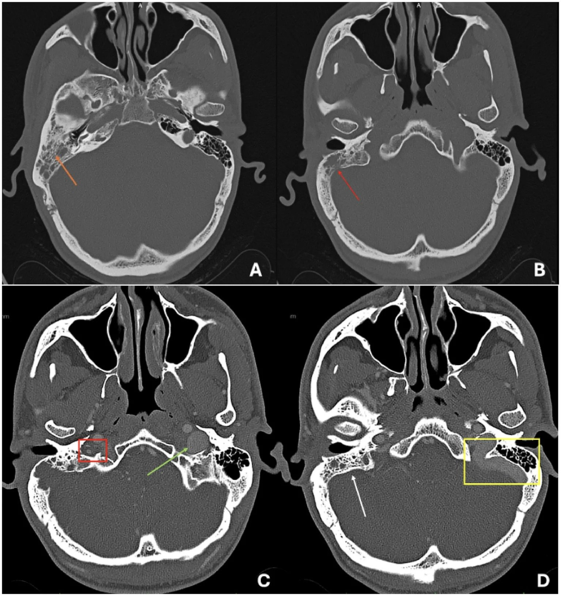
- Hỏi: (A) có gì trong tế bào chũm? (B) vách xoang sigma ra sao? (C,D) có gì bất thường? Nghĩ gì tiếp theo?
Bấm để hiện đáp án (findings + chẩn đoán)
- Dấu hiệu (findings): (A) mờ tế bào chũm phải do mô mềm (mũi tên cam); (B) mòn vách xoang sigma phải (mũi tên đỏ); (C,D) khuyết thuốc (filling defect) trong tĩnh mạch cảnh trong phải + thay đổi mô mềm quanh xương chũm.
- Chẩn đoán (diagnosis): viêm tai xương chũm cấp biến chứng (CAM) — huyết khối xoang sigma–ngang lan tĩnh mạch cảnh trong. Bước tiếp theo: MRI + MRV xác nhận huyết khối và loại trừ áp-xe; cấy mủ; kháng sinh IV.
- Đối chiếu MRI/MRV cùng bệnh nhân (T2 + T1 sau gadolinium + MRV) — huyết khối không ngấm thuốc, lòng xoang trống trên MRV:
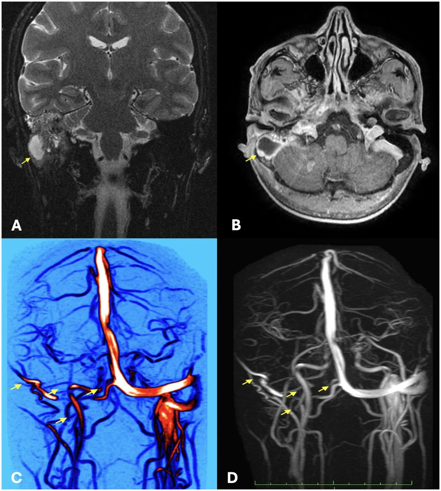
- Nguồn: Arias Rodríguez FD et al., Front Med 2026, PMC13546992 Fig. 2 & 3, CC BY 4.0.
Ca 2 — Nữ 43 tuổi, rối loạn hành vi cấp sau đợt viêm tai giữa. Đọc MRI trước khi mô tả.
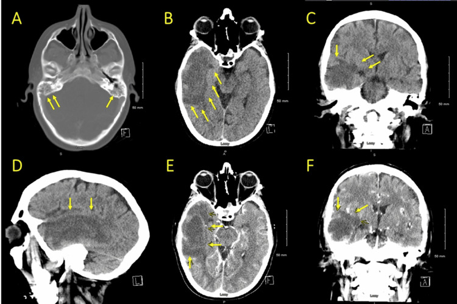
- Hỏi: tổn thương ở đâu? DWI/ADC nói gì về bản chất (mủ hay phù)? Có phải biến chứng của viêm tai không?
Bấm để hiện đáp án (findings + chẩn đoán)
- Dấu hiệu (findings) trên CT: (A) mờ tế bào chũm hai bên (nặng hơn bên phải) + mờ khoang tai giữa phải; (B–D) vùng giảm đậm độ mờ (ill-defined hypodensity) thùy thái dương phải.
- Đối chiếu MRI cùng bệnh nhân:
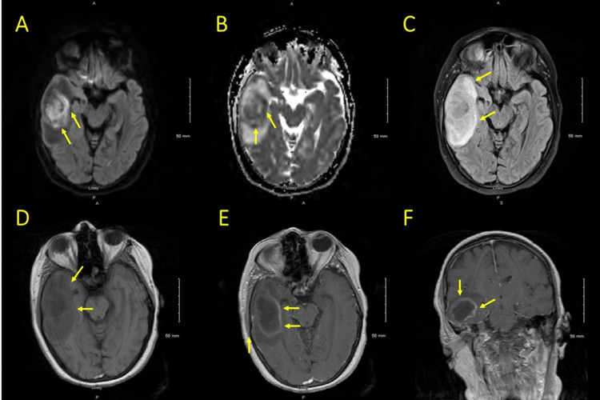
- Dấu hiệu trên MRI: (A,B) DWI sáng + ADC tối vùng thùy thái dương phải = hạn chế khuếch tán; (C) FLAIR tăng tín hiệu (phù mạch); (D) T1 trước tiêm; (E,F) viền ngấm mô tả ổ áp-xe (rim-enhancing).
- Chẩn đoán (diagnosis): áp-xe não thùy thái dương do lan nội sọ của viêm tai xương chũm. DWI sáng/ADC tối = mủ (áp-xe) — phân biệt phù vasogenic (DWI tối/ADC sáng). Xử trí: kháng sinh IV + dẫn lưu áp-xe + mastoidectomy.
- Nguồn: Yahya T et al., Cureus 2026, PMC13427670 Fig. 1 & 2, CC BY 4.0.
Ca 3 — Bệnh nhân cholesteatoma có ổ áp-xe vùng chẩm, mở rộng từ xương chũm. Đọc MRI T1 sau tiêm.
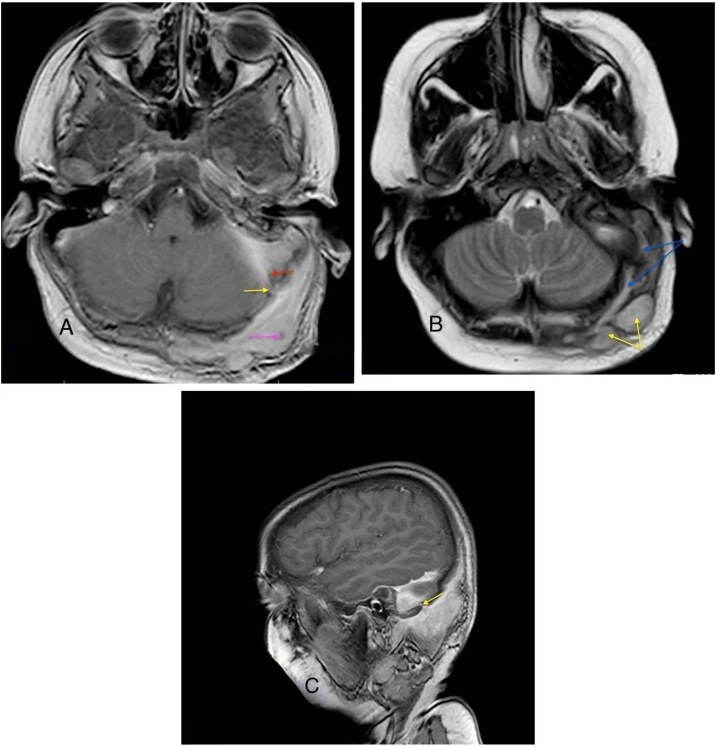
- Hỏi: mũi tên đỏ chỉ gì? Ổ áp-xe vùng chẩm nối với chũm bằng đường nào? Dấu hiệu nào chốt huyết khối xoang?
Bấm để hiện đáp án (findings + chẩn đoán)
- Dấu hiệu (findings): (A) T1 sau tiêm — huyết khối xoang sigma (mũi tên đỏ) + áp-xe da đầu (mũi tên hồng) nối với ổ chũm qua tĩnh mạch xuyên (mũi tên vàng); (B) T2 — đường rò mủ dài từ khoang chũm ra mô mềm vùng chẩm nối nhiều ổ áp-xe; (C) T1 xoay dọc thấy thông thương. Đối chiếu CT trước đó:
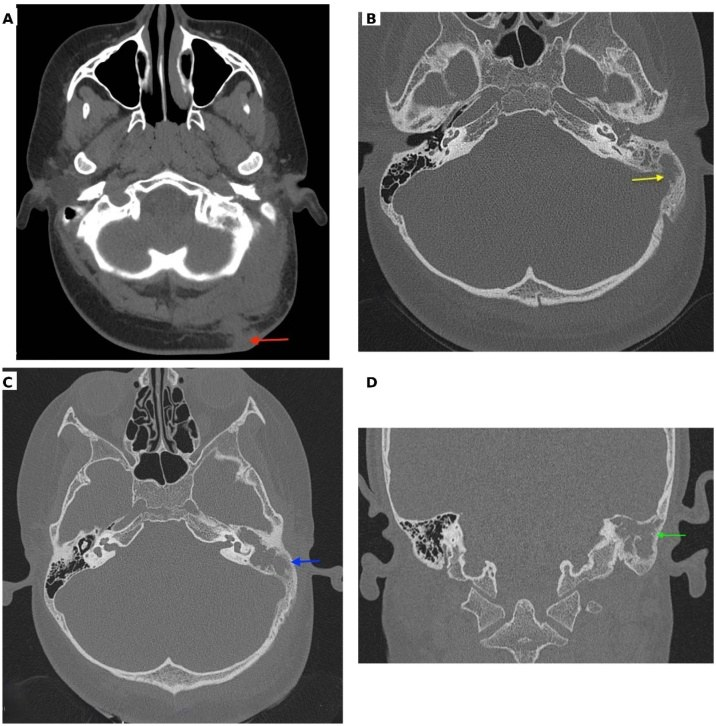
- Dấu hiệu trên CT: (A) khối mô mềm vùng chẩm; (B) tổn thương trong xương chũm có mòn vách xoang sigma (mũi tên vàng); (C,D) vỏ xương nơi khác còn nguyên.
- Chẩn đoán (diagnosis): huyết khối xoang sigma (OLST) + áp-xe da đầu theo tĩnh mạch xuyên (emissary vein) do cholesteatoma. Chốt trên T1 sau tiêm: huyết khối xoang = khuyết/thrombus trong lòng xoang; xem thêm 720.
- Nguồn: Saha KL & Bhowmik B, Braz J Otorhinolaryngol 2026, PMC13213788 Fig. 2 & 3, CC BY 4.0.
Ca 4 — Ông 86 tuổi, triệu chứng hô hấp trên không đặc hiệu, soi tai BÌNH THƯỜNG, 4 ngày sau hôn mê. Đọc CT cửa sổ xương.
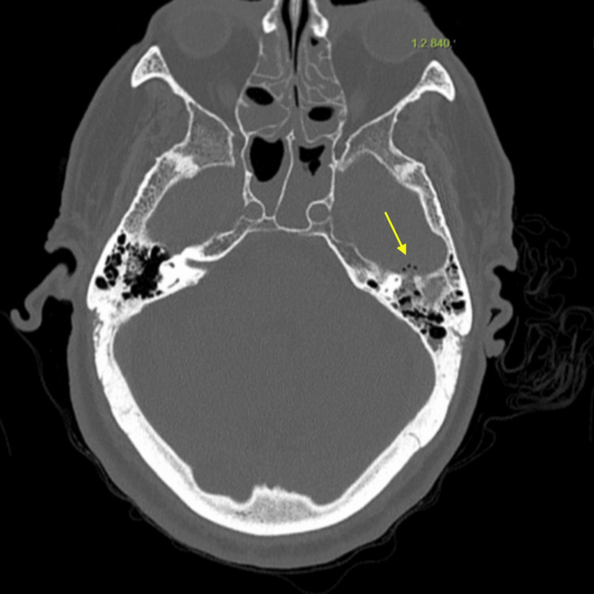
- Hỏi: CT xương thấy gì dù soi tai bình thường? Có bằng chứng lan nội sọ chưa? Nghĩ gì về "viêm xương chũm ẩn"?
Bấm để hiện đáp án (findings + chẩn đoán)
- Dấu hiệu (findings): mờ tế bào chũm và tai giữa bên trái + mòn vỏ xương đá trước (mũi tên vàng) — tức đã có phá xương dù nội soi không thấy viêm tai rõ.
- Chẩn đoán (diagnosis): viêm xương chũm ẩn (masked mastoiditis) đã lan nội sọ (MRI xác nhận áp-xe vùng nền thái dương + tụ mủ dưới màng cứng). Bài học: soi tai bình thường không loại trừ — người già/suy giảm miễn dịch cần chụp khi có dấu thần kinh.
- Nguồn: Bandera-Flores CM et al., Cureus 2026, PMC13080951 Fig. 1, CC BY 4.0.
Ca 5 — Bệnh nhân trên (Ca 4) sau khi chuyển nặng. Đọc MRI sau gadolinium, tìm tổn thương ngoài trục.
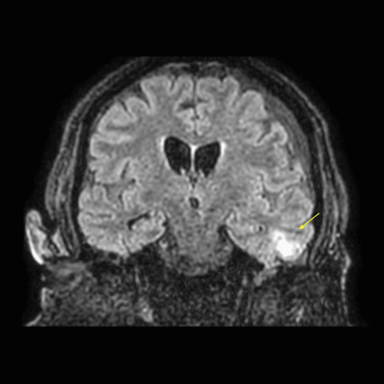
- Hỏi: có mấy loại tổn thương ngoài trục? Đâu là tụ mủ dưới màng cứng, đâu là áp-xe? Nguồn lan?
Bấm để hiện đáp án (findings + chẩn đoán)
- Dấu hiệu (findings): tụ dịch dưới màng cứng trán–thái dương trái + áp-xe vùng nền thái dương trái với phù nhẹ quanh, kèm viêm xương chũm hai bên và mòn xương đá trái.
- Chẩn đoán (diagnosis): biến chứng nội sọ do lan từ viêm xương chũm (tụ mủ dưới màng cứng + áp-xe nền thái dương). Xử trí: kháng sinh IV + corticoid + dẫn lưu xương chũm, hồi sức — vẫn còn di chứng nhận thức khi ra viện.
- Nguồn: Bandera-Flores CM et al., Cureus 2026, PMC13080951 Fig. 3, CC BY 4.0.
Ca 6 — Trẻ 4 tuổi sốt, nôn, đau tai không đỡ dù amoxicillin; sau đó đau đầu, cứng gáy, ngủ gà. Đọc MRI.
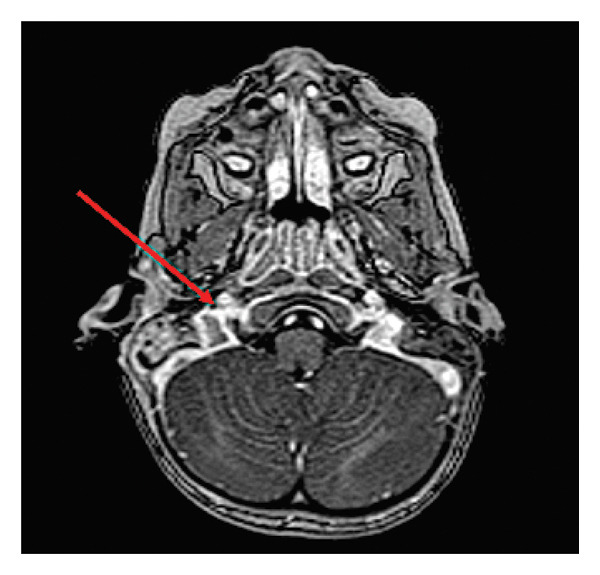
Bấm để hiện đáp án (findings + chẩn đoán)
- Dấu hiệu (findings): huyết khối xoang tĩnh mạch bên phải lan tĩnh mạch cảnh trong (mũi tên), kèm viêm xương chũm (otomastoiditis) có lan ngoài màng cứng. Đối chiếu chuỗi T2 dọc xoang sigma:
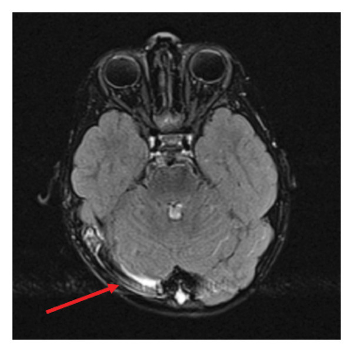
- Dấu hiệu trên chuỗi dọc: tụ dịch mảnh (lamellar collection) dọc xoang sigma phải — tương ứng tụ mủ ngoài màng cứng cạnh xoang.
- Chẩn đoán (diagnosis): viêm xương chũm ở trẻ biến chứng huyết khối xoang tĩnh mạch não (CVST) — chống đông + mastoidectomy + đặt ống thông màng nhĩ; hồi phục tốt. Chốt: sốt + bệnh cảnh thần kinh ở trẻ viêm tai = chụp MRI/MRV.
- Nguồn: Dejhalla E et al., Case Rep Pediatr 2026, PMC12793773 Fig. 2 & 3, CC BY 4.0.
Ca 7 — Đối chiếu cuối: bên trái hay bên phải là gì? Nhãn bệnh giấu đi.
Bấm để hiện đáp án (findings + chẩn đoán)
- Trái: viêm xương chũm trên CT cửa sổ xương — mờ tế bào chũm, mòn vách xoang sigma, khuyết thuốc tĩnh mạch cảnh trong (Arias Rodríguez FD et al., Front Med 2026, PMC13546992 Fig. 2, CC BY 4.0).
- Phải: áp-xe não thùy thái dương trên MRI — DWI sáng/ADC tối, viền ngấm (Yahya T et al., Cureus 2026, PMC13427670 Fig. 2, CC BY 4.0).
- Chốt: cùng một chuỗi bệnh (viêm tai → mòn xương → lan nội sọ), hai mức độ hình ảnh; "đọc CT tìm mòn xương, đọc MRI tìm mủ/huyết khối".
Bài liên quan chéo
- 235 – Xương thái dương & xoang: cholesteatoma DWI + nấm vs u (mòn xương thượng nhĩ ≠ mòn chũm do viêm)
- 720 – Xương đá, viêm tai & cholesteatoma (chi tiết chuỗi xung tai)
- 217 – Ngoài trục CPA (lan nền sọ–hố sau)
- 214 – Nhiễm trùng TKTW (áp-xe não, viêm màng não)
- 213 – U não (DDx DWI sáng/viền ngấm)
- 224 – Chấn thương sọ não ở trẻ (tụ dịch ngoài trục)
- 200 – Tổng quan Thần kinh
Không dùng để chẩn đoán độc lập khi chưa có người hướng dẫn.